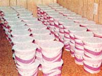

If you've ever kept a flock of chickens, you're probably aware of a basic perversity of homestead life: While your family's consumption of eggs tends to remain fairly constant year round ... your hens' production of the delicious edibles doesn't.
Is there a way to level out this feast-or-famine scheme of things ... is there a way for you to stash away one month's surplus cackleberries and then eat 'em, say, six or eight months later?
Yep. Several forms of egg storage are supposed to make it possible for you to do just that. As MOTHER's continuing tests have already proven, however, some of those "guaranteed" methods of storage work a whole lot better than others!
According to an old joke, "The best way to keep an egg fresh is to keep it in the chicken." A heck of a bunch of MOTHER readers, though, must find that a little hard to do. Because if we've been asked once since founding this magazine, we've been asked a thousand times, "is there any way I can save one month's surplus eggs ... and then use them six or eight months later?"
Well, for several years, we answered that question by recommending one or another (or several) of the "guaranteed, gen-u-wine egg preservation" methods that we'd run across in old farm magazines, ancient Department of Agriculture pamphlets, and other sources. And, although we usually asked the folks we'd advised to let us know how the ideas worked, we never seemed to hear from them again ...
And that left us with, at best, an uneasy feeling. "What happened, anyway?" we asked each other. "Did the idea (or ideas) work? Were the eggs good? After how long? Were they bad? When did they go bad? And how bad did they get? Could they still have been eaten in a pinch? Maybe they were still good, but they just changed color ... or texture .... or something. WHAT HAPPENED, ANYWAY?"
So we mulled that over for a while and finally, about seven months ago, we figured that enough was enough. "By grannies," we told each other, "we'll just set up a test that'll - once and for all - answer all the questions we have about storing fresh eggs."
And that's exactly what we did. We went out and bought ourselves 30 dozen guaranteed fresh, washed, uniform-sized, agribiz-type, unfertile, supermarket eggs from a wholesaler ... and we also rounded up another 30 dozen fresh, unwashed, nonuniform, homestead-type, fertile, non-supermarket eggs.
We suspected from the beginning that there might be a difference in the keeping qualities of fertile versus unfertile eggs. (Our tests have since shown that there is ... and that difference is weighed heavily in favor of the fertile eggs, but perhaps not for the reasons you might have thought.) So we started right off by dividing our 60 dozen hen fruit right down the middle, with 30 dozen fertile eggs on one side and 30 dozen unfertile eggs on the other.
Each set of 360 eggs was then further divided into 10 separate batches of three dozen each: [1] a control group that was left sitting out at room temperature, [2] a batch that was kept under "controlled refrigeration" . . . that is, 36 eggs which were put into an airtight container and stored at a constant 35° to 40°F, [3] a group that was completely covered by a solution of 9 parts water and 1 part sodium silicate, also known as "waterglass", [4] a group that was submerged in a 16 parts water/2 parts lime/1 part salt solution, [5] a batch that was packed in lard, [6] a group that was merely coated with lard, [7] three dozen that were coated with vaseline, [8] 36 eggs that were packed in dry sand, [9] three dozen that were packed in wet sand, and [10] 36 eggs that were packed in dry sawdust. Except for the refrigerated batch, all the groups of eggs were stored at a room temperature which varied from 65° to 70° F.
Our experiment was set up on February 4, 1977 and was designed to run for a full year of regular monthly "look, sniff, taste, and texture" tests. It very quickly became apparent, however, that some of the "preservation" methods we were trying were worse than no attempts at preservation at all. The eggs (both fertile and unfertile) buried in both the wet sand and sawdust looked bad, smelled bad, had lost their taste, and had runny textures just one month after being "preserved". Even the control groups-eggs which were just allowed to lay out at room temperature with nothing done to them-were better than that. Conclusion after only four weeks: Trying to store eggs in either wet sand or dry sawdust is counterproductive. Forget it. Anything else-even nothing at allworks better.
Surprisingly enough, the control eggs-although slightly mushy and musty-were still edible a full eight weeks after our tests began. Except for one El Stinko waterglassed egg (which must have had an unnoticed crack in its shell at the beginning of the experiment), however, the other seven batches still in the running were all much better. Which meant that the "preservation" methods they represented really were preserving the hen fruit to one extent or another.
Believe it or not, our controls (both fertile and unfertile) were hanging in there yet after another full four weeks had passed. If we'd had our druthers, understand, we'd have eaten something else ... but, under survival conditions, we could have lived on the completely unprotected 90-day-old eggs if we'd have had to. Some of the other groups, on the other hand, were becoming a little disappointing. Most of them (even the refrigerated ones) had more or less runny whites, one of the refrigerated store-boughts smelled bad, all the vaseline-coated eggs were marginal, one of the fertilized eggs packed in dry sand had a bad sulphur taste, and a store-bought kept in waterglass was very definitely bad.
By June (120 days after the experiment was begun) all the supermarket and all the homestead control eggs had gone completely rotten. The dry sand groups (both fertile and unfertile) were also terminated at that time ... as were the store-boughts that had been coated with vaseline (the vaseline-coated homestead eggs were only marginally better). The fertile and unfertile eggs packed in lard were getting pretty "iffy", the ones coated with lard were doing a lot better, the lime water groups were still edible (although, in the case of the supermarket eggs, barely edible), the refrigerated eggs seemed to have firmed up and were nearly as good as fresh, and-while the waterglassed groups were, in general, doing far better than average-one of the fertile eggs covered with waterglass was very definitely bad.
The ranks of the still-good eggs began to thin considerably 150 days into our test. By July, the supermarket eggs packed in lard weren't making it anymore (while the fertile eggs packed in lard were runny but edible). Likewise the waterglassed eggs. The lime water store-boughts, on the other hand, were still "good" (except for the one we didn't even open, since it floated), while the lime water homestead hen fruit was only "edible". Both the agribiz and the down-home eggs coated with lard were "good enough to eat for breakfast". While-maybe just by contrast-the store-bought refrigerated cackleberries were "good, like fresh" and the homestead refrigerated hen fruit was "excellent".
August, of course, was more of the same. The lard-packed fertile eggs were still "OK", the waterglassed fertiles were still "OK", the lime water homestead eggs were barely edible and the lime water store-boughts were rotten. The lard-coated hen fruit (both fertile and unfertile) all looked weird ... but could be eaten. Which really only left the refrigerated supermarket and refrigerated homestead eggs as "good" and "looks almost fresh".
The fertile eggs packed in lard, coated with lard, preserved in waterglass, and covered by lime water were still all "OK" in September. The store-boughts coated with lard were not. Leaving, again, as the Big Winners the refrigerated fertile eggs ("good") and the refrigerated unfertile eggs ("good, almost fresh").
At the end of seven months (all of our experiment that was finished and processed at the time this issue went to press), then, we had drawn these conclusions about our egg preservation experiment:
[1] Unwashed, fertile homestead eggs seem to store much better than washed, unfertile agribiz eggs. Why? Probably for the simple reason that they're unwashed ... and not because they're fertile. Hen fruit, as it comes from the chicken, is coated with a light layer of a natural sealing agent called "bloom". And, while a good wash may make a batch of eggs look more attractive, it also removes this natural protective coating ... leaving the eggs more subject to aging and attack by the air and bacteria in the air.
[2] The very best way we've found to stash eggs away for long-term storage is in a sealed container at a temperature of 35° to 40°F. Their whites may become somewhat runny looking over a period of time, buteven after seven months-the cackleberries stored in this manner smell good, taste good, have a good texture, and-in short-seem "almost fresh".
[3] The widely touted idea of covering eggs with a solution of one part waterglass (sodium silicate) mixed with nine parts of boiled and cooled water does indeed seem to work better than any other "room temperature" preservation method we tried. If our experiences are any indication, though, it's really good for only about five months and is a distant second to controlled refrigeration.
Another point: As good as some eggs kept in waterglass were, almost every batch we opened seemed to contain one real stinker. Which makes it a superior idea to open any waterglassed egg (or any egg, for that matter) separately into a cup ... where it may be inspected before pouring it into a skillet, pan, or dish with other food.
[4] Unwashed, fertile eggs submerged in a solution of 16 parts water/2 parts lime/1 part salt, packed in lard, and coated with lard seem to keep at room temperature almost as well as unwashed fertile eggs that have been given the waterglass treatment. Washed, unfertile eggs do not.
[5] Unwashed, fertile eggs packed in dry sand or coated with vaseline and stored at room temperature keep a little longer-but not much-than unwashed fertile eggs that are just left lying out at room temperature. Washed, unfertile eggs exhibit the same characteristics ... with all storage times running a few days less across the board.
[6] Forget packing any kind of eggs in wet sand or sawdust! Our tests show that such methods of "preservation" can turn eggs rotten within a month and are worse than doing nothing at all to the hen fruit.
We'll give you a further report on MOTHER's Great Egg Preservation Experiment sometime next spring ... after the completion of the test's full one-year cycle.
|
 TRAVIS BROCK We divided our fresh eggs into two groups: fertile and unfertile |
TRAVIS BROCK Dennis Burkholder finds that some of the "fresh eggs" were not, as time went by. |
TRAVIS BROCK Dennis says, "This is more like it!" |